O paquete inclúe todo o necesario (Python, OCR, librarías e modelo de idioma): non hai que instalar nada máis nin ter conexión a internet. Inclúe verificación final, solución de problemas habituais, e un apéndice cos procedementos legais e organizativos a ter en conta se este sistema se vai usar de forma continuada.
| Requisito | Detalle |
|---|---|
| Sistema operativo | Windows 10 ou 11 (64 bits) · macOS 12 ou posterior (Intel ou Apple Silicon) · Linux (Ubuntu ou similar, 64 bits) |
| Python, Tesseract e librarías | Non hai que instalar nada. O paquete xa leva dentro Python, Tesseract (OCR en galego e castelán), todas as librarías e o modelo de idioma. |
| Espazo en disco | Windows: uns 650 MB (o asistente amosa o espazo necesario). Mac e Linux: convén ter uns 2 GB libres durante a instalación (o paquete comprimido ocupa uns 450 MB). |
| Memoria RAM | 8 GB recomendados; non precisa tarxeta gráfica (GPU). |
| Internet | Non fai falta, nin sequera para instalar: todo vai dentro do paquete. O uso diario é 100 % local. |
| Permisos | En Windows a instalación é por usuario: non pide permisos de administrador. |
| Só en Windows | Compoñente de Windows Microsoft Edge WebView2 Runtime, co que o programa amosa a súa xanela. Vén instalado en Windows 11; en Windows 10 pode faltar (o instalador avisa; é gratuíto e descárgase da páxina de Microsoft). Se falta, o programa ofrece abrirse no navegador. |
Se algunha vez se perde a clave de cifrado (o ficheiro clave.key, ou a entrada correspondente no chaveiro do sistema), o rexistro de correspondencias xa cifrado NON SE PODE DESCIFRAR NUNCA MÁIS — non hai «recuperar contrasinal». Fai unha copia de seguridade do cartafol do rexistro (datos_rexistro) nun lugar seguro en canto empeces a usalo con documentos reais.
Dende a versión do 27/09/2026 non hai que buscar isto no manual: a propia pantalla de inicio do programa amosa un aviso que di onde quedou a túa clave (nun ficheiro clave.key ou no chaveiro do sistema), lembra facer copia de seguridade e enlaza coa definición da contrasinal de reversión.
En Windows recibes un único ficheiro: Anonimizador-Xuridico-Instalador-<versión>.exe (uns 160 MB). Non hai cartafol nin scripts nin nada que descomprimir.
Fai dobre clic no instalador
Se Windows amosa un aviso azul de SmartScreen («Windows protexeu o seu PC»), non significa que haxa ningún problema: o instalador aínda non leva sinatura dixital comercial. Preme «Máis información» e despois «Executar de todos modos».
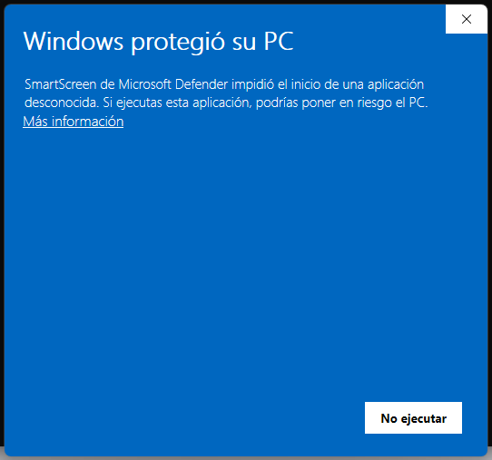
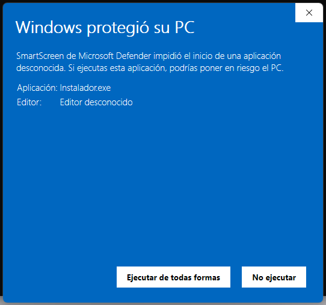
Capturas reais nun Windows 11 en castelán (o aviso e os botóns aparecen na lingua do Windows: «Windows protegió su PC», «Más información», «Ejecutar de todas formas»).
Segue o asistente en galego
Ábrese un asistente normal de Windows. A primeira pantalla é a benvida; preme Seguinte. A segunda propón o cartafol de destino, por defecto C:\Users\<o teu usuario>\AppData\Local\Programs\Anonimizador (non hai que cambialo; ademais amosa o espazo necesario). Preme Instalar.
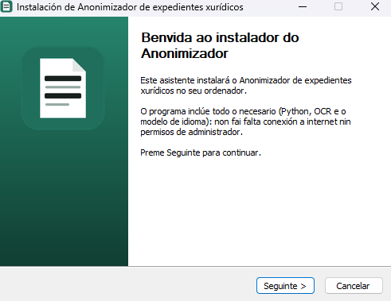
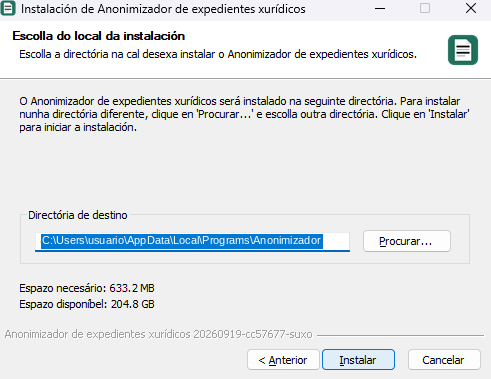
Agarda a barra de progreso
A barra avanza en porcentaxe real (o instalador só copia ficheiros: non descarga nin executa nada máis). Tarda desde uns segundos ata pouco máis dun minuto, segundo o ordenador.
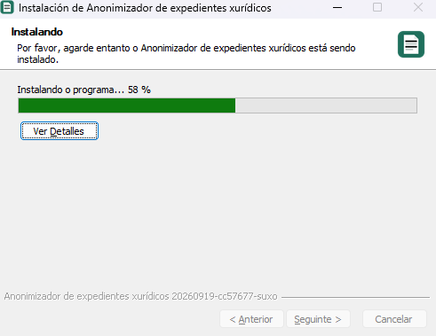
Remata a instalación
A última pantalla di «Instalación completada». Ten dúas casillas: «Abrir o Anonimizador agora» (marcada por defecto) e «Crear un acceso directo no escritorio» (desmarcada; márcaa se queres o acceso no escritorio ademais do menú Inicio). Preme Rematar.
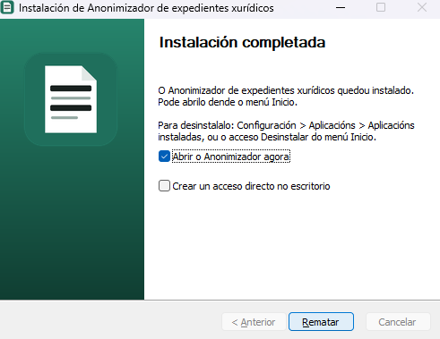
O programa ábrese na súa propia xanela
O Anonimizador non se abre no navegador: ten a súa propia xanela de escritorio, igual ca calquera outro programa. Para usalo despois, ábreo dende o menú Inicio (ver máis abaixo).
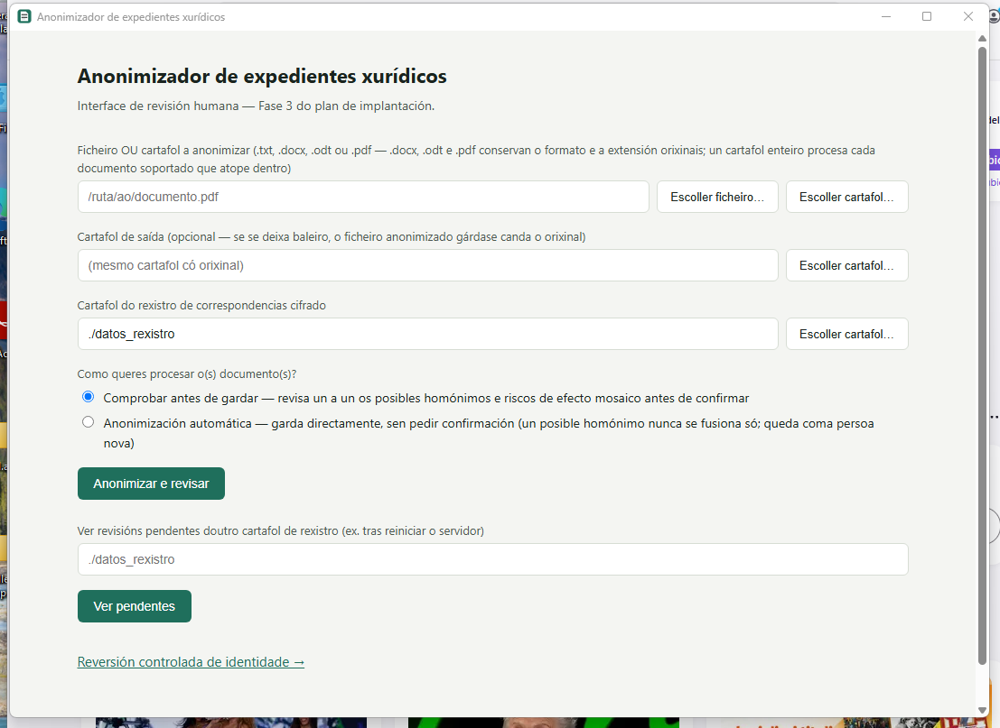
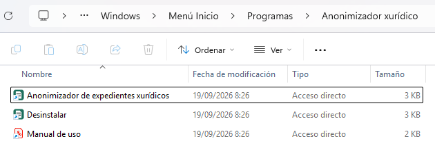
| Que | Onde |
|---|---|
| O programa | %LOCALAPPDATA%\Programs\Anonimizador (é dicir, C:\Users\<usuario>\AppData\Local\Programs\Anonimizador) |
| Accesos | Menú Inicio → Anonimizador xurídico: o programa, o Manual de uso e Desinstalar. Opcionalmente, tamén un acceso no escritorio. |
| Os teus datos | %LOCALAPPDATA%\Anonimizador: aquí están datos_rexistro (os rexistros cifrados de correspondencias) e anonimizador.log (rexistro de erros, útil se algo falla). Están fóra do cartafol do programa: actualizar ou desinstalar o programa non os toca. |
| A clave de cifrado | No Administrador de credenciais de Windows (ver sección 06). |
Basta con executar o instalador novo enriba da instalación anterior. Se o programa está aberto, o asistente avisa e ofrece pechalo; despois substitúe os ficheiros do programa e deixa intactos os teus datos e rexistros.
Hai dúas vías equivalentes: Configuración de Windows → Aplicacións → Aplicacións instaladas → «Anonimizador de expedientes xurídicos» → Desinstalar, ou o acceso Desinstalar do menú Inicio. Nas dúas aparece «JL López» como editor.
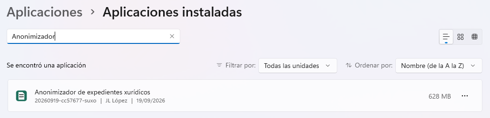
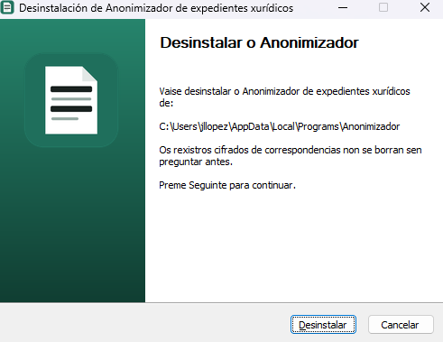
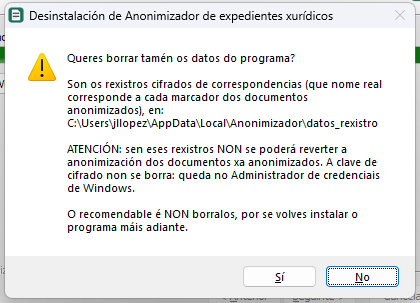
Ao desinstalar, o programa pregunta se tamén se borran os rexistros cifrados de correspondencias (datos_rexistro). A resposta por defecto é Non: sen eses rexistros non se pode reverter a anonimización dos documentos xa anonimizados. A clave de cifrado non se borra (queda no Administrador de credenciais de Windows). O recomendable é non borralos, por se volves instalar o programa máis adiante.
Para administradores: o instalador e o desinstalador aceptan /S (instalación ou desinstalación en silencio, sen ventás; nunca borra os rexistros) e, só no instalador, /D=ruta (outro cartafol de instalación, sempre como último argumento).
Descomprime o paquete de instalación
O ficheiro que recibiches (anonimizador-xuridico-instalacion-<versión>-mac.zip) descomprímese facendo dobre clic. Créase un cartafol con instalar-mac.command, Iniciar-Anonimizador.command, o cartafol anonimizador-xuridico (o programa), runtime e wheels (Python, Tesseract e librarías, para Intel e Apple Silicon) e os PDF de documentación.
Fai dobre clic en instalar-mac.command
A primeira vez, macOS pode amosar un aviso de seguridade («non se puido verificar o desenvolvedor»). Fai clic dereito sobre o ficheiro → «Abrir» → confirma «Abrir» na ventá que aparece (tamén se pode permitir en Axustes do Sistema → Privacidade e seguridade). Só fai falta facelo unha vez.
Espera a que remate a instalación
O script escolle automaticamente o Python e o Tesseract do paquete que corresponden ao teu Mac (Intel ou Apple Silicon), crea un ambiente illado de Python (.venv), instala as librarías e o modelo de idioma dende o propio paquete, sen conexión a internet e sen instalar nada no resto do sistema. Tarda uns minutos.
====================================================== Instalador do Anonimizador de expedientes xurídicos ====================================================== [1/3] Creando o ambiente illado de Python (.venv)... [2/3] Instalando as librarías necesarias... [3/3] Instalando o modelo de recoñecemento de idioma... ====================================================== Instalación completada correctamente. A partir de agora, usa 'Iniciar-Anonimizador.command' para abrir o programa. ====================================================== Preme Intro para pechar...
Texto que amosa o Terminal durante a instalación (contido real do script, non é unha captura literal).
Para usalo: dobre clic en Iniciar-Anonimizador.command
O programa ábrese nunha xanela propia (non no navegador). O Terminal que se abre xunto con ela só amosa unha mensaxe: para pechar o programa, pecha a xanela do Anonimizador. Non hai que repetir a instalación.
Descomprime o paquete
Descomprime anonimizador-xuridico-instalacion-<versión>-linux.zip. Contén instalar-linux.sh, Iniciar-Anonimizador.sh, o programa (anonimizador-xuridico), runtime, wheels e os PDF.
Executa o instalador nun terminal, dentro do cartafol descomprimido
Abre un terminal na carpeta e escribe bash instalar-linux.sh. Non fagas doble clic no ficheiro: Ubuntu abre os .sh no editor de texto en vez de executalos (e, se descomprimiches o zip nun pendrive, o permiso de execución pérdese igualmente, porque eses pendrives non o gardan). Fai os mesmos tres pasos ca en Mac: ambiente illado, librarías e modelo de idioma, todo dende o paquete e sen internet.
Para usalo: busca «Anonimizador» no menú de aplicacións — a instalación crea aí a entrada. Tamén vale, nun terminal: bash Iniciar-Anonimizador.sh.
Ábrese nunha xanela propia se o sistema ten GTK 3 e WebKit2GTK (en Ubuntu: sudo apt install gir1.2-webkit2-4.1 python3-gi). Se faltan, o programa ábrese automaticamente no navegador, en http://127.0.0.1:5050 (enderezo que só funciona neste mesmo ordenador).
O rexistro cifrado de correspondencias (datos_rexistro) e o anonimizador.log viven fóra do cartafol do programa, coma en Windows: en Mac, en ~/Library/Application Support/Anonimizador; en Linux, en ~/.local/share/anonimizador. Así, actualizar ou borrar o cartafol do programa non os toca. A clave queda no chaveiro do sistema.
Actualizar a unha versión nova: descomprime a versión nova directamente no sitio onde a vas usar (non a renomees despois: o ambiente de Python garda a ruta) e executa outra vez o instalador. Se vés dunha versión anterior á de outubro de 2026, o rexistro estaba dentro do cartafol vello do programa (anonimizador-xuridico/datos_rexistro): se a versión nova está no mesmo cartafol, trasládase só ao abrir o programa; se está noutro, copia ese datos_rexistro á ruta de datos de arriba antes de abrir o programa.
Ao abrir o programa (dende o menú Inicio en Windows, ou co script de arranque en Mac e Linux) debe aparecer esta pantalla, na súa propia xanela:
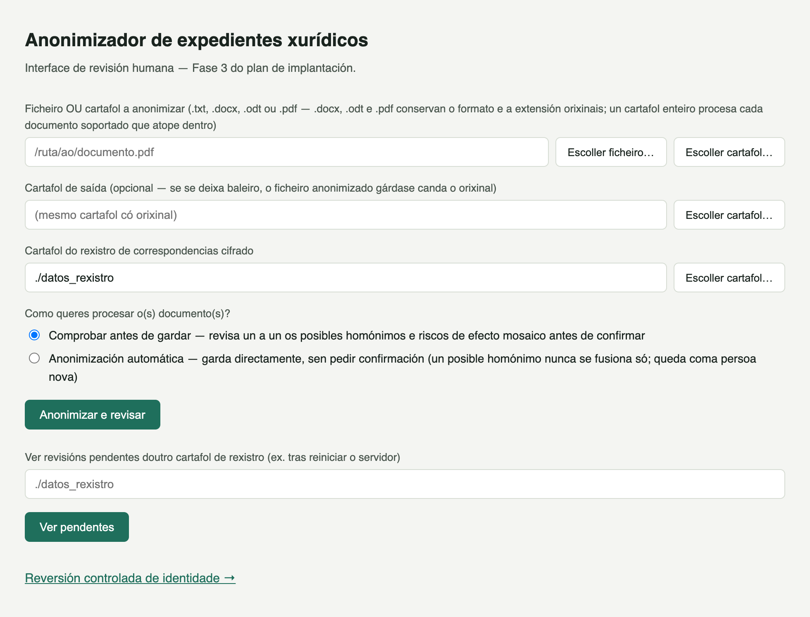
Se a ves, a instalación funcionou correctamente. O manual de uso explica como anonimizar o primeiro documento. Todo o procesamento é local: o programa non se conecta a ningún servizo externo. O servidor interno do programa só escoita en 127.0.0.1 (este mesmo ordenador), nunca na rede.
Os accesos e scripts de arranque activan por defecto a opción --chaveiro-sistema: a clave que cifra o rexistro de correspondencias gárdase no chaveiro nativo do sistema operativo (non nun ficheiro xunto aos datos): Administrador de credenciais en Windows, Chaveiro (Keychain) en macOS e, en Linux, o chaveiro do escritorio (por exemplo GNOME Keyring ou KWallet). A primeira vez que se crea un rexistro novo, macOS pode pedir confirmación (e o contrasinal do ordenador): confirma cando apareza. En Windows non adoita aparecer ningún diálogo.
Isto só ocorre a primeira vez que se procesa un documento contra un rexistro novo. As seguintes veces, tanto o programa coma a interface de revisión atopan a clave automaticamente.
| Problema | Solución |
|---|---|
| Windows amosa «Windows protexeu o seu PC» ao abrir o instalador | «Máis información» → «Executar de todos modos». É normal: o instalador aínda non leva sinatura dixital comercial. Non indica ningún problema real. |
| Windows di que falta «WebView2» ao instalar | É un aviso, non un erro: a instalación continúa. En Windows 10, instala gratis o «Microsoft Edge WebView2 Runtime» dende a páxina de Microsoft; mentres tanto o programa ofrecerá abrirse no navegador. |
| Windows di que o programa só funciona en 64 bits | Este programa só funciona en Windows de 64 bits (Windows 10 ou 11). |
| O instalador di que o Anonimizador está aberto | Preme «Aceptar» para que o asistente o peche (garda antes o que estivese a facer), ou «Cancelar» para saír. |
| «non se puido verificar o desenvolvedor» (Mac) | Clic dereito sobre o ficheiro .command → «Abrir» → confirmar. Só fai falta a primeira vez. |
| Linux: o script ábrese no editor de texto (vin o código en vez do programa) | É o comportamento normal do doble clic en Ubuntu. Usa a entrada «Anonimizador» do menú de aplicacións, ou abre un terminal e escribe bash Iniciar-Anonimizador.sh. |
| Linux: «Permission denied» ao executar o script | chmod +x instalar-linux.sh Iniciar-Anonimizador.sh e volve tentar. |
| O programa non se abre ou pecha ao momento (Windows) | Mira o ficheiro %LOCALAPPDATA%\Anonimizador\anonimizador.log: rexistra os erros. Se pide abrirse no navegador, acepta e segue traballando, e comproba o compoñente WebView2. |
| «Tesseract non está instalado» ao anonimizar un PDF escaneado | Non debería ocorrer: Tesseract vai dentro do paquete. Volve executar o instalador (Windows) ou o script de instalación (Mac/Linux) sen mover nin borrar cartafoles do paquete. |
| «Address already in use» / a interface non carga nada | O porto 5050 xa está en uso por outro programa (normalmente outra copia do Anonimizador aberta antes). Pecha esa copia, ou reinicia o ordenador. |
| Mac/Linux: a instalación tarda moito | Instala moitas librarías dende o propio paquete: pode levar varios minutos. Non peches a ventá ata ver «Instalación completada correctamente». |
Este sistema realiza pseudonimización, non anonimización irreversible pura (o informe técnico orixinal explica a diferenza en detalle). Iso significa que, mentres exista o rexistro de correspondencias, os datos seguen sendo datos persoais a efectos legais. Se este sistema se chega a usar de forma continuada (non só como proba), convén ter en conta:
Para un uso persoal ou puntual (non nun despacho profesional suxeito a obrigas formais de protección de datos), estes puntos son recomendacións de boas prácticas, non obrigas legais estritas. Se este sistema chega a usarse nun contexto profesional regulado, convén consultar cun responsable de protección de datos antes de poñelo en produción.